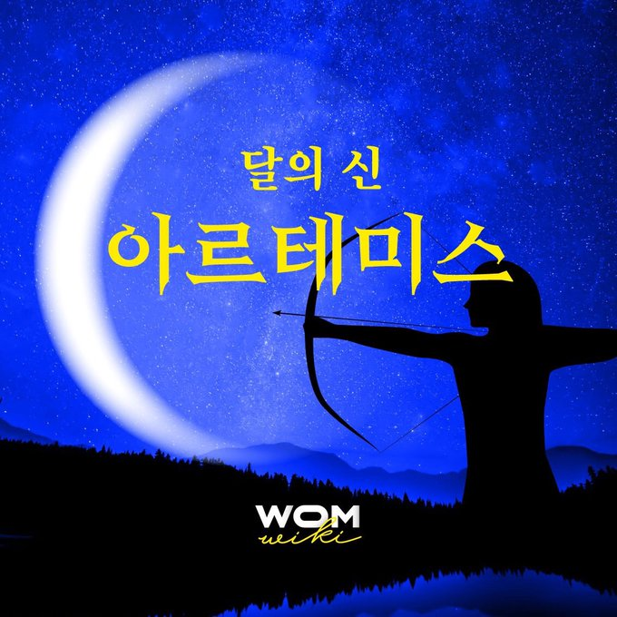

| 아르테미스는 그리스 신화의 달의 신이다. |  |
달빛, 사냥, 그리고 ‘순결’의 신.
아르테미스가 실은 퀴어일 수 있다는 주장은 그리스 신화를 즐기는 이들 사이에서 여러 번 제기되어 왔다.
아르테미스는 동정인 여성들에게 호위를 받는다. 그는 3살에 아버지인 제우스에게 선물로 영원한 ‘처녀성’을 달라고 요구하였으며, 크레타 섬에서 직접 시녀들을 선택했다. 당시의 ‘처녀성’으로 여성과의 성교는 고려되기 어려웠으므로, 아르테미스는 평생 남성과 섹스를 하지 않은 여성들과 함께했다고도 해석할 수 있다.
그리스 신화의 일화 중 하나는 제우스는 아르테미스의 모습으로 시녀 중 한 명이었던 칼리스토를 유인한 것이다. 일부 판본에서는 아르테미스의 모습으로 키스할 때까지도 이러한 모습이 일상이라 칼리스토가 의심을 하지 않았다고 전해진다.
아르테미스가 남자 사냥꾼 오리온과 사랑에 빠졌다는 이야기 또한 전해진다. 하지만 오리온을 최초로 언급한 기원전 7세기경 고대 그리스의 헤시오도스는 「천문학」에서 단지 아르테미스가 총애하는 사냥꾼이었다고 언급한다. 특히 아르테미스와 오리온의 사랑 이야기는 현대에 들어 비극적인 결말로 인기를 끌어 과장되어 재창작되었을 가능성이 높다. 아르테미스는 아폴론의 계략으로 결국 바다를 건너는 오리온을 사냥감으로 착각하고 활로 쏘아 죽이게 된다.